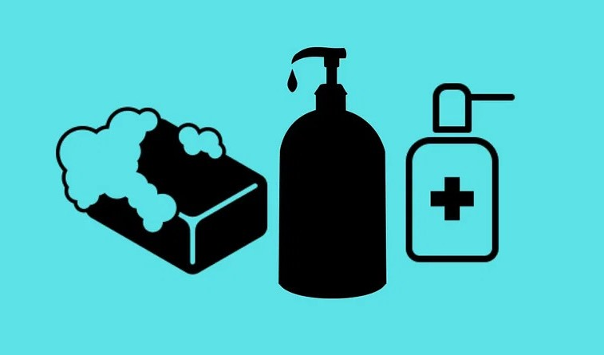

Health refers to a state of complete physical, mental, and social well-being.
It is not merely the absence of disease but also encompasses factors such as proper nutrition,
regular exercise, emotional well-being, and a balanced lifestyle.
Maintaining good health is essential for a high quality of life and the ability to engage in daily activities.
Hygiene refers to practices and behaviors that promote cleanliness, prevent the spread of diseases,
and maintain personal well-being. Good hygiene habits are essential to prevent the transmission of
harmful microorganisms and maintain a healthy living environment

Importance
Here are some key reasons why health and hygiene are crucial:
Disease Prevention: Good hygiene practices, such as handwashing, proper sanitation, and cleanliness,
play a significant role in preventing the spread of infectious diseases.
By practicing good hygiene, we can minimize the transmission of harmful bacteria, viruses,
and parasites that can cause illnesses like colds, flu, gastrointestinal infections, and more.
Social and Environmental Impact: Health and hygiene have broader social and environmental implications.
By practicing good hygiene, we contribute to the well-being of our communities and reduce the risk
of outbreaks and epidemics. Additionally, maintaining proper sanitation and environmental hygiene
helps preserve the environment, minimize pollution, and protect natural resources.
Positive Influence on Others: When we prioritize our health and practice good hygiene, we set a positive
example for others, especially family members, friends, and colleagues. By sharing our knowledge and
encouraging healthy habits, we can inspire those around us to adopt similar practices, creating a ripple
effect that promotes collective well-being.
Improved Quality of Life: Good health and hygiene directly contribute to an improved quality of life.
When we take care of our bodies and minds, we experience higher levels of vitality, increased productivity,
and greater satisfaction in our daily lives. Being in good health allows us to actively participate in
activities we enjoy and pursue our goals and aspirations.
My Activity
Introduction:
In village community, ensuring good health and hygiene practices is essential for the overall well-being of individuals and the community as a whole. This community service project aims to raise awareness and implement practical strategies to promote health and hygiene among villagers. By actively engaging community members, we can empower them to adopt healthier lifestyles and create a cleaner, safer environment.
Objective:
The primary objective of this project is to educate villagers about the importance of health and hygiene practices and encourage behavior change. By doing so, we aim to reduce the incidence of preventable diseases, improve overall health outcomes, and enhance the quality of life within the community.
Community Awareness Campaign:
Conduct community meetings and gatherings to discuss the significance of health and hygiene practices.
Utilize visual aids, presentations, and interactive sessions to effectively convey information.
Address common misconceptions and myths related to health and hygiene.
Share success stories and case studies to inspire behavior change.
Personal Hygiene Workshops:
Organize workshops focusing on personal hygiene practices such as handwashing, oral hygiene, and bathing.
Demonstrate proper techniques and provide guidance on the use of soaps, toothbrushes, and other hygiene products.
Sanitation and Waste Management:
Promote the construction and proper use of toilets in households to improve sanitation.
Educate community members about the importance of proper waste disposal and recycling.
Organize clean-up drives to remove litter and debris from public spaces.
Collaborate with local authorities to implement sustainable waste management systems.
Nutrition and Healthy Eating:
Conduct workshops on balanced nutrition, focusing on the importance of a diverse diet and the consumption of locally available foods.
Establish community vegetable gardens to encourage the cultivation and consumption of fresh, organic produce.
Facilitate cooking demonstrations that showcase nutritious recipes using locally sourced ingredients.
Preventive Healthcare Camps:
Organize regular health camps in collaboration with medical professionals and volunteers.
Conduct health screenings, including blood pressure checks, body mass index assessments, and basic medical examinations.
Offer information on preventive measures and early detection of common diseases.
Distribute educational materials and resources on health-related topics.
Sustainability and Continuous Support:
Establish community-led committees responsible for maintaining and promoting health and hygiene practices.
Foster a culture of accountability, where community members actively participate in sustaining the progress achieved.
Regularly evaluate the impact of the project through surveys and feedback sessions.
Develop partnerships with local organizations, government agencies, and NGOs to secure ongoing support.
Conclusion:
By implementing this comprehensive approach to health and hygiene promotion in our village community, we aim to create a lasting impact on the well-being of individuals. Through education, awareness, and community engagement, we can empower villagers to make informed choices that prioritize their health and create a clean, hygienic environment. By working together, we can build a healthier, more resilient community for generations to come.